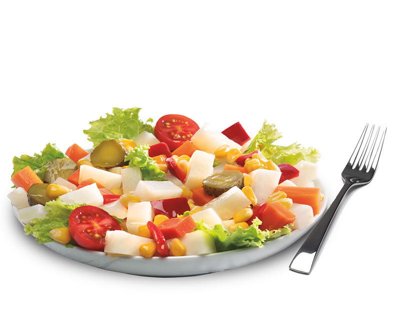

Recette 1 - Salade Printanière
- Feuilles de laitue
- Tomates cerises coupées en deux
- Concombres tranchés
- Avocat en dés
- Graines de tournesol
- Vinaigrette légère

Recette 2 - Saumon Grillé
- Filets de saumon frais
- Mariner dans un mélange d'huile d'olive, de citron, d'ail et d'herbes
- Griller pendant 10 minutes de chaque côté
- Accompagner de riz complet et de légumes cuits à la vapeur
Recette 3 - Omelette aux Champignons
- Ingrédients:
- Oeufs
- Champignons tranchés
- Fromage râpé
- Instructions:
- Battre les oeufs dans un bol
- Ajouter les champignons et le fromage
- Verser le mélange dans une poêle et cuire jusqu'à ce qu'il soit bien cuit
Recette 4 - Smoothie Vert
- Feuilles d'épinards
- Banane
- Ananas
- Yaourt grec
- Mixer tous les ingrédients jusqu'à obtention d'une texture lisse
- Servir dans un verre et déguster
Recette 5 - Poulet Rôti
- Préchauffer le four à 180°C
- Assaisonner le poulet avec des herbes et des épices
- Placer le poulet dans un plat allant au four
- Rôtir au four pendant 1 heure ou jusqu'à ce que le jus soit clair
- Accompagner de légumes rôtis